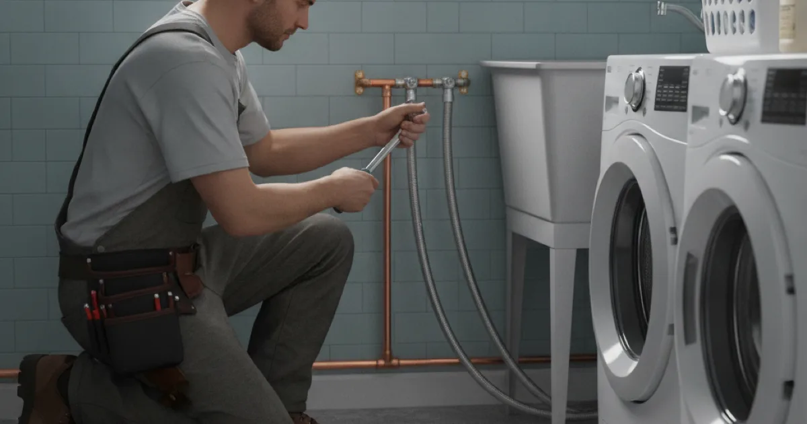

Laundry Room Plumbing in Westchester County, NY
Washer supply, drain, and valves all have to work together to keep a laundry room dry. Dan's Drains handles laundry room plumbing, from new hookups to updated valves and drains.
- Licensed & Insured
- Same-Day Service Available
- Upfront Pricing
- 15+ Years Local Experience

Need a plumber in Westchester County? We can usually help the same day.
What Laundry Room Plumbing Covers
A laundry setup needs hot and cold supply valves, a drain that can handle the washer's discharge, and secure connections. We install and update all of it, whether you are adding a laundry room or fixing an old one.
The washer connection itself is closely related to our broader appliance water hookups.
Why Laundry Plumbing Matters
Washing machines move a lot of water quickly, so a weak drain or a burst supply hose can flood a room fast. Good valves and a properly sized drain keep that from happening.
Single-lever shutoff valves also make it easy to turn off the water when you are away.
Talk to a local Westchester County plumber today.
How We Handle Laundry Plumbing
We install or update the supply valves, connect or improve the drain standpipe, and secure the hoses. Then we run the washer through a cycle to confirm it fills and drains without leaks.
Where a laundry room is going in a new spot, we run the necessary supply and drain lines.
Laundry Rooms in Local Homes
Many homes here have laundry in the basement, where a drain backup or burst hose can do real damage. Updating old rubber hoses and adding good shutoff valves is cheap protection.
Efficient washers use less water too, as ENERGY STAR notes, and we set up the plumbing to match.
When to Call a Pro
Call us when you are adding a laundry room, moving the washer, or dealing with slow drains or old valves. Getting the plumbing right keeps the room dry.
If the laundry drain backs up, that can tie into a larger drain line clog we can clear.
Frequently Asked Questions
Can you set up plumbing for a new laundry room?
Yes. We run the supply and drain lines, install valves, and connect the washer so the new laundry room works safely.
Why does my washer drain back up?
It can be an undersized or clogged standpipe drain, or a larger clog in the line. We check the whole path and clear or update as needed.
Should I replace my washer hoses?
If they are old rubber hoses, yes. Braided stainless hoses are far less likely to burst and flood the room.
Can you add shutoff valves for my washer?
Yes. A single-lever shutoff makes it easy to turn off the water when you are away, reducing flood risk.
My laundry is in the basement — any extra concerns?
Basement laundry adds flood risk, so good valves, a sound drain, and sturdy hoses matter even more. We set it up to keep the space dry.
Ready to book? Reach Dan’s Drains for fast, upfront plumbing help.